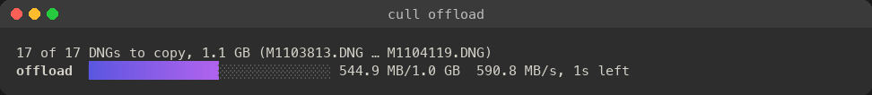
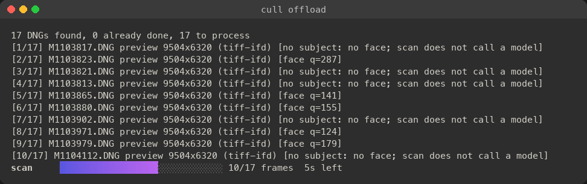
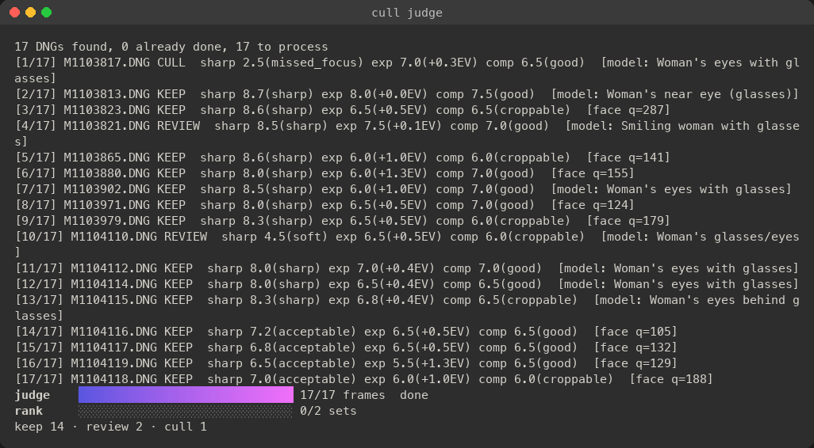

A culling instrument for DNG shoots
Sharpness gates.The rest is an edit.
cull is a command-line tool that culls a shoot of DNG files before you import it into Capture One or Lightroom. A vision model assesses each frame’s full-resolution preview. Deterministic Go rules decide keep, review or cull: code you can read, audit and tune.
$ git clone https://github.com/jefflaplante/cull && cd cull && make buildRequires Go 1.26. The Capture One parts need macOS.
2 Principle
Three priorities, in order.
-
IGate
Sharpness gates.
Judged at the eyes, on a native-resolution crop of the full preview.
-
IICorrect
Exposure gets fixed, not culled.
Exposure is assessed with a suggested correction in stops. It is never a reason to discard a frame.
-
IIICrop
Composition gets cropped, never culled.
“Croppable” is a note on a keeper, not a verdict.
The model assesses.
Go decides.
The vision model (Claude) only reports what it sees: where focus should be, how sharp it is there, the exposure, the composition. Keep, review and cull are decided by deterministic rules in Go. The same assessment always gets the same decision, and you can read the rule that made it.
4 Pipeline
From card to catalogue, in six stations.
-
cull offloadOffload
Card to a dated shoot folder. Hashed, written, read back, verified.
Local · no model -
cull scanScan
Extracts each full-resolution preview and finds faces. No model call.
Local · no model -
cull judgeJudge
The model assesses each frame; Go rules decide. Near-identical sets are ranked.
Model assesses · Go decides -
cull reviewReview
A keyboard-driven contact sheet in your browser. Your labels win.
Your call -
cull decideSort
XMP sidecars written; frames moved into keep/, review/ and cull/.
Your call -
cull apply-c1Capture One
Import keep and review. Later changes are pushed in by AppleScript.
Your call
8 Offload
Read the card once. Verify every file.
- Read the card once, hashing every file with SHA-256 as it is read.
- Write into a dated shoot folder.
- Drop the copy from memory and read it back from the disk to verify it.
- Flush the drive’s write cache.
- Print
safe to format the cardonly when every file is verified.
- Frames
- 992
- Card
- 67.7GB
- Time
- 8min
Measured: a 992-frame M11-P card to an external SSD, every file verified.
- Never writes to the card. Never replaces a file.
- Re-running copies only what’s missing.
- An optional second backup drive is written from the same single read.




15 Judge
Judged at the eyes, at full resolution.
cull reads the embedded JPEG preview inside each DNG: 9504 × 6320 on the M11-P. Sharpness is judged on a native-resolution crop at the eyes, not on a downscaled frame.
Face detection finds the subject. When there is no face, the model locates the intended focus target. And it knows how a rangefinder is used: manual focus, fast lenses shot wide open.


Best of a burst, side by side.
Near-identical frames, a burst or a repeated pose, are grouped and ranked side by side by the model. You keep the best few of each set.
The lens cap costs nothing.
Lens-cap, blown-white and blank frames are set aside without a model call.
Measured on 992 real frames: the thresholds clear every real frame by a wide margin, and they caught the one blank frame.
Your model, your bill.
| Anthropic API | Message Batches at half price |
|---|---|
| Claude subscription | via Claude Code |
| Local model | OpenAI-compatible |
--estimate prices a run for free before anything is spent, and a cost cap stops it. On a 17-frame shoot the estimate was $0.37 at list price.
30 Review
A contact sheet that answers to you.
Your labels always win over the model’s.
cull review opens a keyboard-driven contact sheet in your browser.
- Verdict
- Keep, review or cull, frame by frame
- Stars
- Rate as you go
- Loupe
- 100%, opened on the subject
- Compare
- A set, side by side
- Exposure
- Preview the correction
Calibrate before you trust it.
Label a sample. cull calibrate reports the false-cull rate against your judgement and sweeps the thresholds.
Nothing should auto-apply until it’s calibrated. The rules are code, so tuning them means moving a threshold, not rewording a prompt.
60 Delivery
Into Capture One as metadata.
XMP sidecars
Stars, colour labels and keywords, written beside each DNG for your editor to read on import.
| Colour label | Verdict |
|---|---|
| Green | keep |
| Yellow | review |
| Red | cull |
Keywords
- portrait
- forest
- smile
- project
- event
- location
The model’s content keywords, plus your project, event and location, nested as a keyword hierarchy in Capture One 16.7. Verified.
Sorted before import
--sort moves frames into three folders, so you import only keep and review.
After import
apply-c1 pushes later changes into Capture One by AppleScript. It is a dry run by default.
Your DNGs are never modified. Every move is recorded, and cull restore undoes it.
125 Specification
Measured, not promised.
| File format | DNG |
|---|---|
| Image assessed | Embedded JPEG preview |
| Preview size, M11-P | 9504 × 6320 px |
| Sharpness crop | Native resolution |
| Changes to your DNGs | None |
| Card | 992 frames · 67.7 GB |
|---|---|
| Destination | External SSD |
| Time | 8 min |
| Hash | SHA-256, while reading |
| Verification | Read back from disk, every file |
| Writes to the card | None |
| Second backup | Optional, same single read |
| Real frames tested | 992 |
|---|---|
| Model calls | 0 |
| Blank frames caught | 1 of 1 |
| Frames | 17 |
|---|---|
| Time | Under 2 min |
| Keep / review / cull | 14 / 2 / 1 |
| Cull reason | Missed focus, sharpness 2.5 |
| Estimate, 17 frames | $0.37 list price |
| Anthropic API | Message Batches, half price |
|---|---|
| Claude subscription | Via Claude Code |
| Local | OpenAI-compatible |
| Spend control | --estimate · cost cap |
| Sidecars | XMP: stars, labels, keywords |
|---|---|
| Keyword hierarchy | Capture One 16.7, verified |
| After import | apply-c1, dry run default |
| Undo | cull restore |
| Language | Go |
| Requires | Go 1.26 · macOS for Capture One |
Figures are single measured runs on real M11-P files, not averages. The 17-frame run is unlabelled: it shows the tool working, not its accuracy on your work. That is what cull calibrate is for.
250 Install
Build it, then read it.
Open source, written in Go. Every rule that keeps or culls a frame is in the repository.
$ git clone https://github.com/jefflaplante/cull && cd cull && make buildRequires Go 1.26. The Capture One parts need macOS.
View on GitHub# copy the card into a dated shoot folder, verified
$ cull offload /Volumes/LEICA\ M ~/Pictures --name "Forest portraits"
# $SHOOT is that shoot folder. Price it first, free.
$ cull judge --estimate "$SHOOT"
$ cull judge "$SHOOT"
# label, star and compare in the browser
$ cull review "$SHOOT"
# sidecars, then keep/ review/ cull/
$ cull decide --write-xmp --sort "$SHOOT"